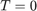

plotCMDS
Processes the output data of a finished simulation and plots the two-dimensional (2D) spectrum in absolute values as well as its real and imaginary part.
Contents
Syntax
- plotCMDS(plotContribution,ax1_quantum,ax2_quantum,nfold_zeropadding,type)
- plotCMDS(plotContribution,ax1_quantum,ax3_quantum,nfold_zeropadding,type,ax2_index)
Description
- plotCMDS(plotContribution,ax1_quantum,ax2_quantum,nfold_zeropadding,type) plots the result from a three-pulse simulation.
- plotCMDS(plotContribution,ax1_quantum,ax3_quantum,nfold_zeropadding,type,ax2_index) plots the result from a four-pulse simulation.
Detailed Description
- plotCMDS(plotContribution,ax1_quantum,ax2_quantum,nfold_zeropadding,type) plotContribution represents the set of three weighting factors that are unique for a specific nonlinear signal contribution from a three-pulse simulation (see also Ref. [1]). Thus, plotContribution needs to be a vector with length 3. ax1_quantum and ax2_quantum are central frequency scaling factors of the first and the second frequency axes, respectively. These two values are directly correlated with the choice of plotContribution. nfold_zeropadding corresponds to an integer n that causes n-fold zero padding in the data processing. For applying no zero padding, set nfold_zeropadding to 1 . type expects either 'rephasing' or 'nonrephasing' which must also be chosen according to the values for plotContribution. Choosing type appropriately ensures that every signal contribution is plotted with positive values for each frequency axis.
- plotCMDS(plotContribution,ax1_quantum,ax3_quantum,nfold_zeropadding,type,ax2_index) expects a vector with length 4 for plotContribution. In addition to the remaining arguments, ax2_index has to be provided as an additional parameter which denotes the index of an array element of the delay between the second and third pulse (also called population time ).
In both cases, plotCMDS performs a scaling of initial time domain values by a factor of 0.5 according to a procedure described in Ref. [2] before two-dimensional fast Fourier transform (FFT) by the fft2 function. The scaling procedure suppresses spurious "ridges" along both frequency dimensions.
For additional information about plotCMDS see: https://qd-toolbox.org/tutorials/#chapter7.
References
[1] H.-S. Tan, J. Chem. Phys. 129 , 124501 (2008).
[2] G. Otting, H. Widmer, G. Wagner, K. Wüthrich, J. Magn. Reson. 66 , 187-193 (1986).
Examples
c.plotCMDS([-1 2 -1],1,1,2,'rephasing');
will display a photon echo 2D spectrum that was simulated by using a three-pulse sequence. Here, [-1 2 -1] are the photon-echo specific weighting factors and the following two numbers represent the fact that the expected signals oscillate at one quantum of the employed laser spectrum over both interpulse time delays. The next number denotes two-fold zero padding while the last argument 'rephasing' is chosen to plot the signal with positive frequency axes.
c.plotCMDS([-1 1 1 -1],1,1,2,'rephasing',1);
will display the photon echo 2D spectrum at a population time of  from the output of a four-pulse simulation. Here, the two numbers after the array of plotContribution correspond to the frequency scaling factors of the frequency axes that are generated from Fourier transform along the first and the third interpulse delay.